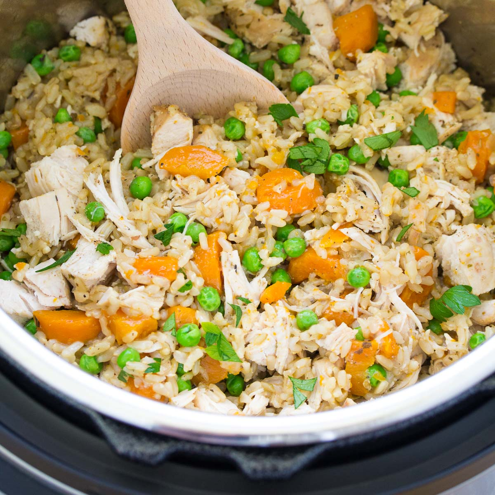

Chicken, rice with vegetable

This is image of a recipe called chicken, rice and veg.
It would be considered batch cooked so the amount of
food will be equal to five portions. Details of how to
cook this recipe and the ingredients needed will be
shown below.
Ingredients
- 500g of diced chicken breast.
- 500g of wholegrain rice.
- 500g of a mix of peas, carrots and sweetcorn.
- soy sauce.
- oyster sauce.
Directions
- Slice the chicken breast into small chunks.
Add soy sauce and place it into the heated
pan and cook for 10 minutes.
- Add wholegrain rice and the mixed vegetables
into the pan. Pour more soy sauce and oyster
sauce.
- Let it heat for 5 minutes.